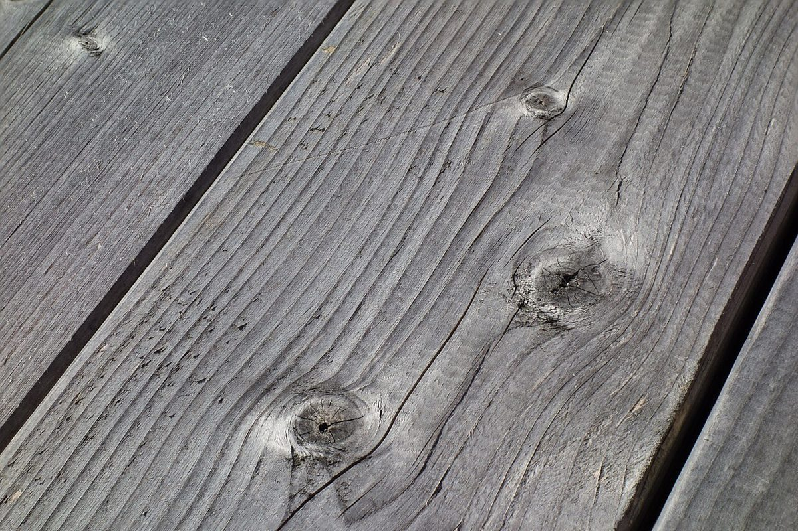
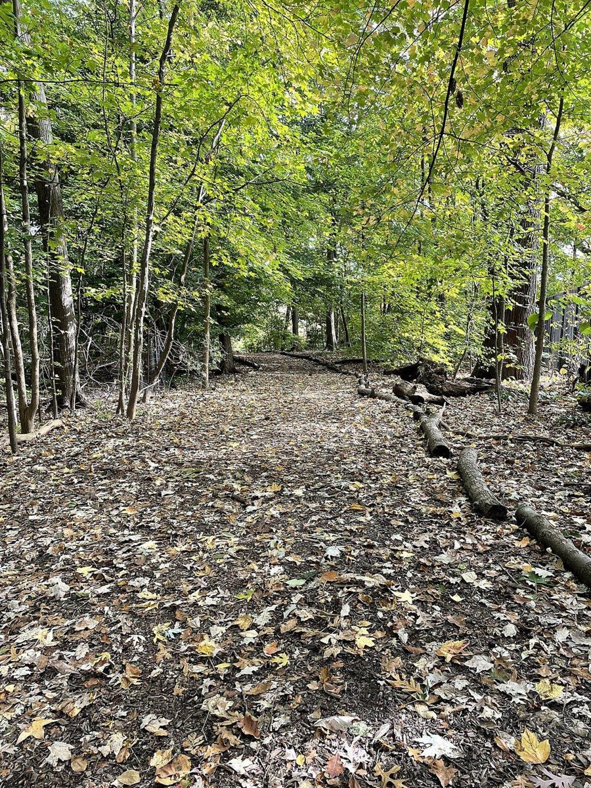

9時 / 店のこと
店のこと
お店について確認できているのは、所在地とInstagramのアカウントだけです。
確認できていること
- 店名は「SHADE TREE COFFEE」、業種はカフェ
- 所在地は高知県四万十市右山五月町7-7(〒787-0012)
- 電話番号はなし。連絡はInstagramから
- 営業時間・定休日・メニュー・価格・ご予約・駐車場は準備中

想像してみる
朝の9時、影が縮みはじめる。
ここから先は制作側が想像して書いたものです。お店の実際の様子・考え・メニューとは関係がありません。

もし、午前の光のなかで一杯のコーヒーを待つとしたら。カップから立ちのぼる湯気と、机に落ちる影の長さを眺めて過ごす時間があるかもしれません。これは写真から思い描いたイメージで、お店の提供内容や空間を表すものではありません。

写真のイメージ
落ち葉と、大きな葉。


このサンプルについて
このページの「影の定規」という作りは、屋号の「SHADE TREE(木陰をつくる木)」という言葉から制作側が連想したものです。お店の理念・店名の由来・店内や周辺の様子とは無関係で、店名の意味を決めつけるものでもありません。
お店のことをお聞きしたうえで、写真・文章・色をお店らしく作り直します。